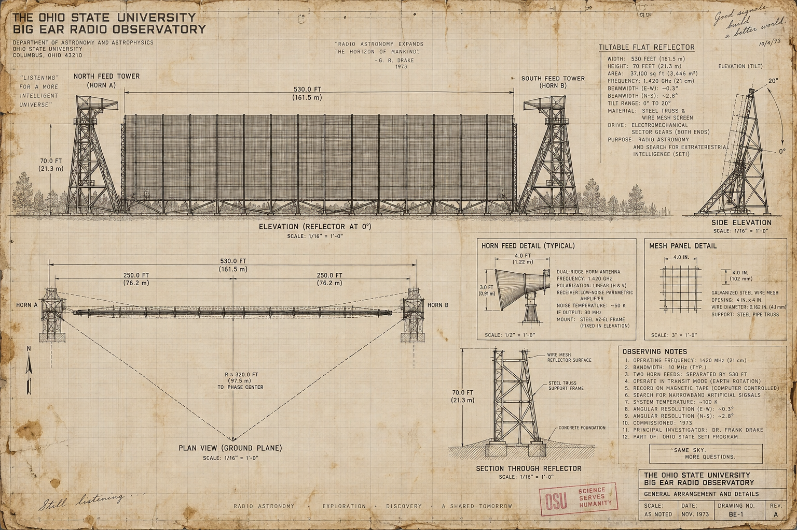
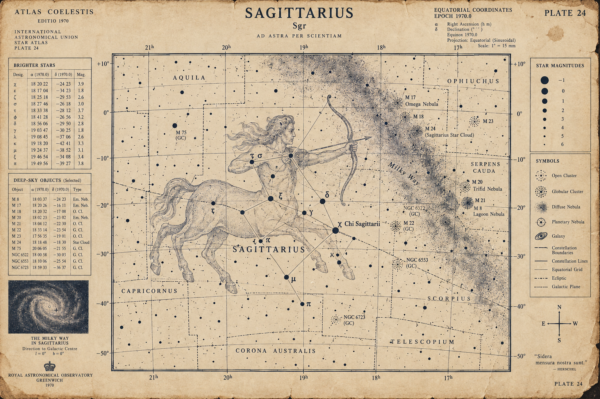
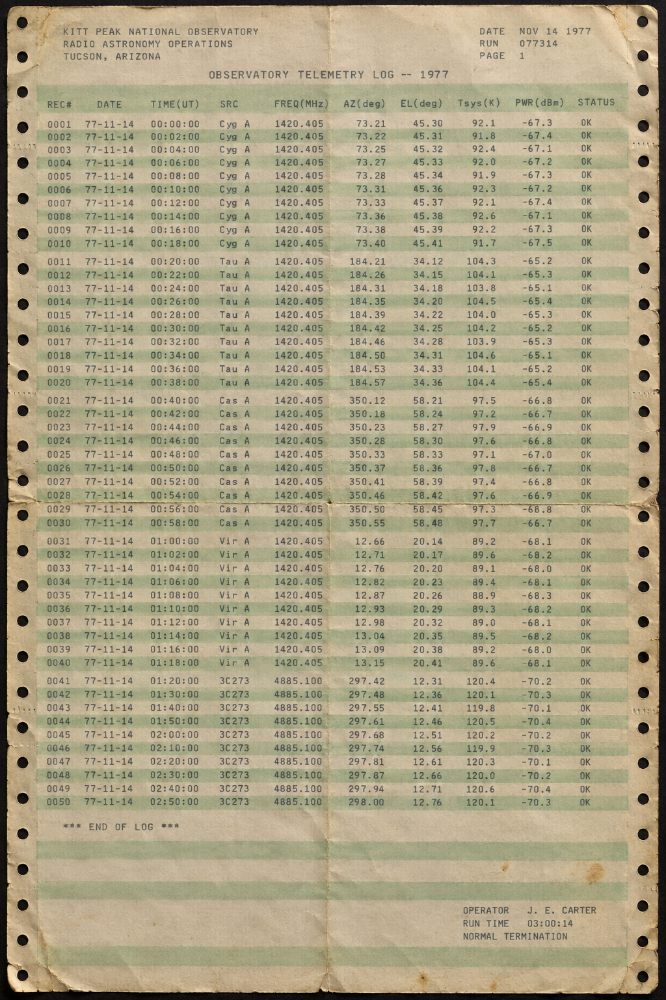
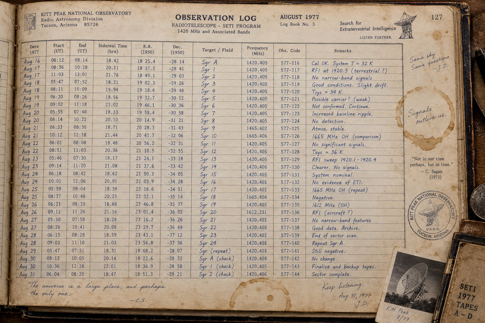
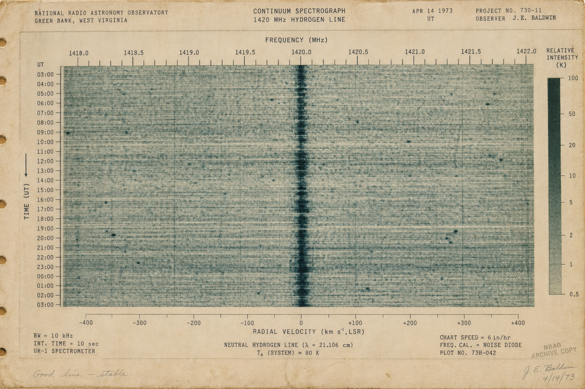
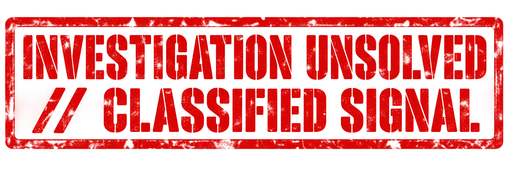

OBSERVATORY ARCHIVE // OHIO STATE UNIVERSITY · 1977
Field-Sized Antenna: 110m × 30m
50 Narrowband Channels (10 kHz)
15 AUGUST 1977 · DELAWARE, OHIO
A football-field radio telescope known as Big Ear was silently scanning the deep cosmos.
PROJECT SETI · EXTRATERRESTRIAL SEARCH
Searching 50 simultaneous channels for an artificial broadcast from an alien civilization.

BEAM GEOMETRY // DRIFT-SCAN OBSERVATION PROFILE
BEAM TRANSIT WINDOW
0
SECONDS
STEERING MOTORS
NONE
(EARTH ROT.)
Gaussian Bell Curve Response
TRANSIT MECHANICS · EARTH ROTATION
Big Ear was completely immobile, relying purely on Earth's rotation to sweep the sky.
72-SECOND SIGNATURE · POINT SOURCE
A genuine interstellar point source could only be heard for exactly 72 seconds.

MAINFRAME FORENSICS // IBM 1130 CONTINUOUS TRACTOR FEED
PEAK SIGNAL INTENSITY
0
× BACKGROUND
HYDROGEN LINE (21 CM)
0000.000
MHZ
1, 2, 3 → Letters: 6 E Q U J 5!
ASTRONOMICAL AUDIT · JERRY EHMAN
Astronomer Jerry Ehman reviewed the IBM 1130 dot-matrix printout paper by paper.
CHANNEL 2 SPIKE · 30X BACKGROUND
Channel 2 suddenly surged into letters: 6 - E - Q - U - J - 5.
1420.405 MHZ · THE COSMIC WATERHOLE
Broadcasting on the hydrogen line: the quietest cosmic channel in existence.

FORENSIC CROSS-EXAMINATION // 50 YEARS OF FAILED THEORIES
TERRESTRIAL CANDIDATES TESTED & RULED OUT
• CLASSIFIED MILITARY SATELLITES
• TERRESTRIAL AIRCRAFT REFLECTIONS
• COMETS 266P/CHRISTENSEN & GIBBS
ALL FAILED
"Wow!" — Dr. Jerry Ehman
THE RED PEN · ICONIC NOTATION
Jerry grabbed a red Pilot pen, circled the characters, and scribbled: "Wow!".
50 YEARS OF INQUIRY · ALL THEORIES COLLAPSE
Satellites, reflections, comets. For 50 years, every explanation failed.

DEEP SPACE COORDINATES // RA 19h 22m 24s · DEC -27° 00'
TELESCOPE RE-OBSERVATIONS
0
SCANS
COSMIC SIGNAL STATUS
DEAD SILENT
Origin Distance: 1,800+ Light-Years Away
OVER 100 ATTEMPTS · GREEN BANK & VLA
Earth's greatest telescopes scanned the spot over 100 times. The sky was silent.
COSMIC WHISPER · NEVER HEARD AGAIN
A solitary 72-second transmission, never to be heard again.
UNSOLVED COSMIC ANOMALY // SETI FORENSIC DOSSIER #07

CASE STATUS // CLASSIFIED SIGNAL
The greatest unsolved mystery in deep space astronomy. The Wow! Signal.